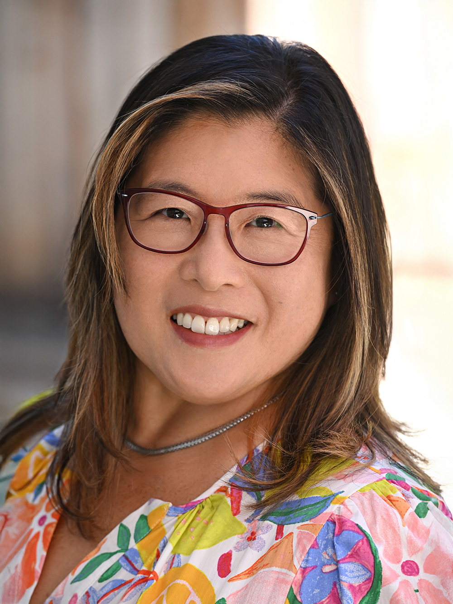
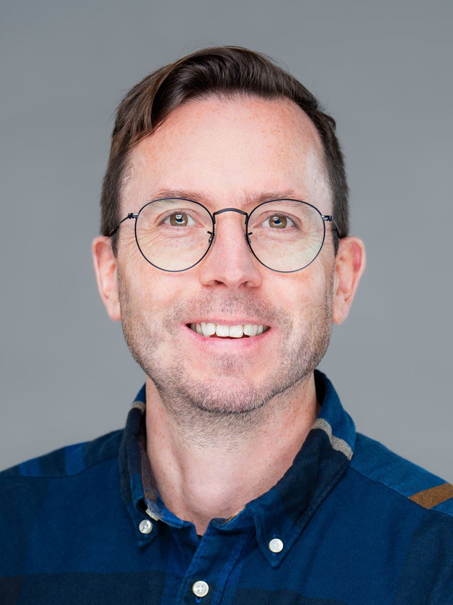
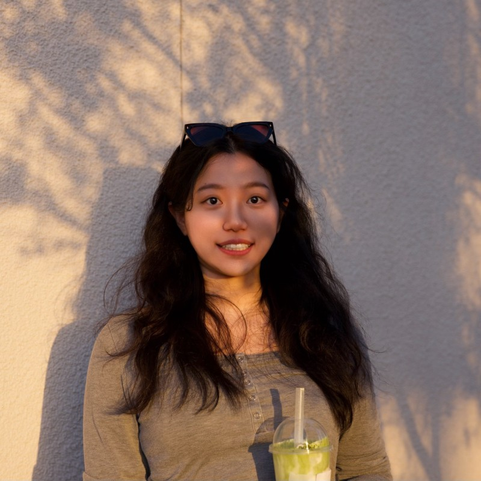

The Degree Mapping Project is led by a multidisciplinary team of researchers, designers, and subject‑matter experts with experience spanning mathematics education, computer science, assessment design, and curriculum research. Together, the team brings expertise in analyzing course content, documenting conceptual dependencies, and translating research findings into usable tools and resources.
Research Team

Lei Liu, Ph.D.
Lei Liu, Ph.D., is a Research Director at ETS and an adjunct professor at the University of Pennsylvania. She holds a Ph.D. in educational psychology with a focus on learning sciences and educational technology from Rutgers University, and earned her bachelor's degree in science and English with a minor in Computer Science from Central South University of Technology in China. Dr. Liu’s research centers on STEM education and the transition from K-12 to postsecondary pathways. She has led multiple federally funded projects and an AI center focusing on AI-supported assessments and STEM innovations. She contributes to national and state assessment programs, including NAEP Science and Mathematics, and CA State assessments. For the Degree Mapping Project, she oversees the research design, integration of disciplinary perspectives, and development of the analytic framework.

Ou Lydia Liu, Ph.D.
Ou Lydia Liu, Ph.D. is Associate Vice President of Research at ETS and a globally recognized expert in the assessment of critical skills and competencies in higher education and the workforce. She has led large-scale research projects funded by government and private agencies across the U.S., India, China, and Korea. A recipient of multiple national awards, she was named an AERA Fellow in 2023. Dr. Liu holds a Ph.D. in Quantitative Methods and Evaluation from the University of California, Berkeley. For the Degree Mapping Project, she provides strategic oversight and guidance to ensure methodological rigor.

Field Watts, Ph.D.
Field Watts, Ph.D., is a Research Associate at ETS, where he contributes to projects related to eliciting, identifying, and measuring student learning. His research focuses on student reasoning in STEM and the applications of machine learning and artificial intelligence within educational contexts. He holds a Ph.D. in Chemistry Education and an M.S. in Chemistry from the University of Michigan. Dr. Watts provides valuable contributions to the mapping by integrating insights on conceptual learning and applications of calculus in scientific and computational reasoning.

Erin Barno, Ph.D.
Erin Barno, Ph.D., is an Associate Measurement Scientist at ETS specializing in math teacher learning and mathematical knowledge for teaching. Before joining ETS, Erin taught secondary mathematics and was a mathematics instructional coach in the greater Boston area before completing her Ph.D. in STEM curriculum and instruction at Boston University. Her research focuses on designing technology-enhanced practice spaces for pre- and in-service teachers that promote equitable and ambitious mathematics instruction. Dr. Barno contributes valuable expertise on how conceptual calculus understanding supports both teaching and learning in STEM contexts.

Ann Edwards, Ph.D.
Ann Edwards, Ph.D., is Senior Director of Mathematics at WestEd and a national leader in equitable mathematics education, with over 30 years of experience spanning K-12, postsecondary and adult contexts. She covers the Carnegie Math Pathways, supporting over 85,000 students across 140 institutions, and co-led the recent NAEP Mathematics Framework revision. Her bachelor’s degree in Applied Mathematics (Harvard) and Ph.D. from UC Berkeley inform her expertise in curriculum design and teacher learning. For this project, Ann collaborates with subject matter experts from both STEM and mathematics domains to guide the development and refinement of the mappings.

Lewis Hosie
Lewis Hosie is a Senior Research Manager in mathematics at WestEd, with 10+ years of experience in math curriculum design and technology integration across K-12, postsecondary and adult learning contexts. He directs development and implementation efforts for the Carnegie Math Pathways project, and occupies curriculum management and technical design roles in multiple federally-funded grant projects. He has a bachelor’s degree in mathematics, statistics, and economics, in addition to postgrad credentials in instructional design and technology. For this project, Lewis identifies, manages, and collaborates with STEM and math subject matter experts to guide the development of topic mappings and visualization tool use cases.

Tina Jiang
Tina Jiang is an MS student in Integrated Design, Business and Technology at the USC Iovine and Young Academy, with an MFA from Claremont Graduate University and a BA in Design from UC Davis. Her work sits at the intersection of fine arts and emerging technology, with a focus on Extended Reality and spatial computing. For this project, she designed and built the interactive visualization tool that maps mathematical connections across STEM disciplines.